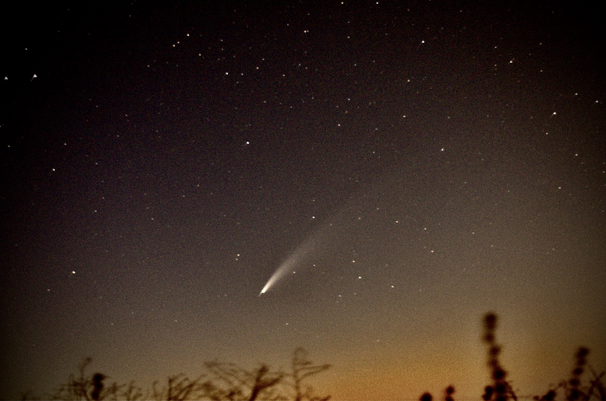

As of now, there are three main planets visible in the night sky (Northern California). The first being Jupiter which is clearly visible about 30 degrees east of south after 9:00pm. Saturn is visible during 1:00 AM in the same location. In the mean time Venus is visible near the horizon during dawn and dusk. The summer is a great time to look at the planets as they travel across the night sky.
Here are some pictures I have taken recently with my Nikon camera and the newest newtonian reflector I built!Comet Neowise, wide angle, early dawn.

Comet Neowise, high exposure, late evening.Saturn, reflector.Waning Moon, reflector.Orion's Nebula, Clay Telescope.Jupiter, reflector.Andromeda, Clay Telescope.